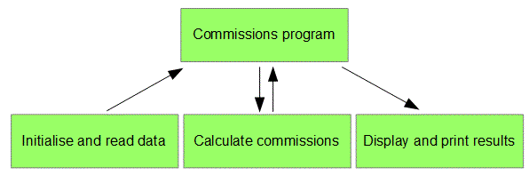

<div id="jsn-maincontent" class="span9 order1  row-fluid">
					<div id="jsn-maincontent_inner">
						<div id="jsn-centercol"><div id="jsn-centercol_inner">
									<div id="jsn-mainbody-content" class=" jsn-hasmainbody">
								<div id="jsn-mainbody-content-inner1"><div id="jsn-mainbody-content-inner2"><div id="jsn-mainbody-content-inner3"><div id="jsn-mainbody-content-inner4" class="row-fluid">
								
										
								
								<div id="jsn-mainbody-content-inner" class="span12 order1 ">
		
										<div id="jsn-mainbody">
										<div id="system-message-container">
	</div>

										<div class="item-page" itemscope itemtype="https://schema.org/Article">
	<meta itemprop="inLanguage" content="en-GB" >
	
		
						
		
	
	
		
								<div itemprop="articleBody">
		<p></p>
<h1 class="ContentHeading" style="text-align: center;" align="center">Modularity</h1>
<p class="NormalContent"><strong class="NormalContentHeading">Introduction</strong><br> When faced with any complex problem, finding a solution may well appear a daunting task at first. However, with the right systematic approach, complex problems can be reduced to many far simpler problems. Each of these simpler problems can then be solved. They can then be used or re-combined back up to the original problem. Before you know it, that unsolvable, complicated task that you had to find a solution for has been solved! This approach has been around for years and is known as <strong><em>modular programming</em></strong>.</p>
 
<p class="NormalContent"><strong>Top-down programming using procedural languages</strong><br>In top-down programming, a programmer takes a task and then breaks it down into smaller tasks. They then take each smaller task and break it down further into sub-tasks. They continue to do this until each sub-task is simple enough to understand and program and, ideally, each sub-task performs only one job. The sub-tasks are then programmed as self-contained modules of code. When a problem is broken down into modules, the relationship between one module and the next is clearly defined. If we break down one module into three modules, for example, the relationship between the three modules is clearly defined so that together, they perform in exactly the same way that one big module of code would have performed.</p>
<p class="NormalContent">Consider a module that calculates a salesman's commission. You could have one module that does this, but because it performs a number of different tasks, it will be split into three modules. This is shown in the next diagram.&nbsp;</p>
<ol>
<li style="list-style-type: none;"><ol>
<li class="NormalContent">The first module is now responsible for initialising the program and reading in values. That is all it does. Its relationship with the main program is that it passes sales figures out to the program.</li>
<li class="NormalContent">The next module is responsible for doing the calculations. Its relationship with the main program is that it reads in sales figures and passes back commissions due.</li>
<li class="NormalContent">The third module is the display and print module. Its relationship with the main program is that it reads in commissions due.</li>
</ol></li>
</ol>
<p class="NormalContent">The above design could be improved further. We have already said that ideally modules should perform only one function. The 'Initialise and read in data' module could be split into an 'Initialise' module and a 'Read data' module. The 'Display and Print' module could also be split into two modules, one called ‘Display’, which will be in charge of displaying results on a VDU, and one called 'Print' which will be responsible for printing out results.</p>
<p class="NormalContent">Once modules have been identified, they can then be written. Remember, each module is a block of code that should be self-contained, perform one very specific task and will usually have an interface with the main program.</p>
<p class="NormalContent"><strong class="NormalContentHeading">Different names for ‘modules of code’ - functions and procedures</strong><br> Do note the different terms commonly used interchangeably for 'modules' of code. One person might, for example, call a self-contained block of code a ‘module’ of code. Another might use the word ‘subroutine’. In most languages, you write subroutines using either a function or a procedure.&nbsp;Both of these programming units are broadly similar but it does very much depend on what programming language you are using. You need to spend a little bit of time looking up how whatever language you are learning deals with functions and procedures.</p>
<p class="NormalContent">Traditionally, functions and procedures are both subroutines of code. They can both accept parameters (pieces of data that are passed to it when they are called) and both can do calculations on data. Functions, however, traditionally return only a <strong><em>single</em> </strong>value to the main program whereas procedures don't return values at all. In addition, with functions, traditionally the value passed back to the main program is done by using a variable that has the same name as the function itself! And just to confuse things further, some languages like Python don't have procedures - they use very flexible functions and these can send back more than one value using variables of different names! It can be confusing but you just need to be aware of the traditional view of functions and procedures, and know how your programming languages deals with them.</p>
<p class="NormalContent"><strong>An outline of a top-down design</strong><br>Look at the next program. It has the name ‘commission’. Three procedures are written. The actual program is at the end of the code and is simply made up of calls to the procedures that have been written.&nbsp;If you looked at the 'shape' of the final code for the problem just described, it might look something like this:</p>
<p style="margin-left: 60px;"><strong>Program commission</strong></p>
<p style="margin-left: 60px;"><strong>Procedure InitialiseAndRead&nbsp;&nbsp;&nbsp;&nbsp;&nbsp;&nbsp;&nbsp;&nbsp;&nbsp;&nbsp; //procedure responsible for initialising variables and reading in data.</strong></p>
<p style="margin-left: 60px;"><strong> Begin</strong></p>
<p style="margin-left: 60px;"><strong> &nbsp;&nbsp;&nbsp; -------</strong></p>
<p style="margin-left: 60px;"><strong> &nbsp;&nbsp;&nbsp; -------</strong></p>
<p style="margin-left: 60px;"><strong> End</strong></p>
<p style="margin-left: 60px;"><strong>Procedure Calculate&nbsp;&nbsp;&nbsp;&nbsp;&nbsp;&nbsp;&nbsp;&nbsp;&nbsp; //this procedure is responsible for calculations.</strong></p>
<p style="margin-left: 60px;"><strong> Begin</strong></p>
<p style="margin-left: 60px;"><strong> &nbsp;&nbsp;&nbsp; -------</strong></p>
<p style="margin-left: 60px;"><strong> &nbsp;&nbsp;&nbsp; -------</strong></p>
<p style="margin-left: 60px;"><strong> End</strong></p>
<p style="margin-left: 60px;"><strong>Procedure DisplayAndPrint &nbsp;&nbsp;&nbsp;&nbsp;&nbsp;&nbsp;&nbsp;&nbsp;&nbsp;&nbsp;&nbsp;&nbsp; //procedure responsible for displaying &amp; printing the output.</strong></p>
<p style="margin-left: 60px;"><strong> Begin</strong></p>
<p style="margin-left: 60px;"><strong> &nbsp;&nbsp;&nbsp; -------</strong></p>
<p style="margin-left: 60px;"><strong> &nbsp;&nbsp;&nbsp; -------</strong></p>
<p style="margin-left: 60px;"><strong> End</strong></p>
<p style="margin-left: 60px;"><strong>Begin&nbsp;&nbsp;&nbsp;&nbsp;&nbsp;&nbsp;&nbsp;&nbsp;&nbsp;&nbsp;&nbsp;&nbsp;&nbsp;&nbsp;&nbsp;&nbsp;&nbsp;&nbsp;&nbsp;&nbsp;&nbsp;&nbsp;&nbsp;&nbsp;&nbsp;&nbsp;&nbsp;&nbsp;&nbsp;&nbsp;&nbsp;&nbsp;&nbsp;&nbsp;&nbsp;&nbsp;&nbsp;&nbsp;&nbsp;&nbsp;&nbsp;&nbsp;&nbsp;&nbsp;&nbsp;&nbsp;&nbsp;&nbsp;&nbsp;&nbsp;&nbsp;&nbsp; //this is the program. It is made up of calls to the various procedures.</strong></p>
<p style="margin-left: 60px;"><strong> &nbsp;&nbsp;&nbsp; InitialiseAndRead</strong></p>
<p style="margin-left: 60px;"><strong> &nbsp;&nbsp;&nbsp; Calculate</strong></p>
<p style="margin-left: 60px;"><strong> &nbsp;&nbsp;&nbsp; DisplayAndPrint</strong></p>
<p style="margin-left: 60px;"><strong> End</strong></p>
<p class="NormalContent"><strong>Programming in modules</strong><strong class="NormalContentHeading"><br></strong>Whatever language or type of language you are programming in, part of the design process will always involve breaking problems down and identifying calculations, processes and in fact any job that has to be done more than once. Just as in top-down programming, problems are typically broken down again and again, until each problem relates to just one specific area. Once these have been identified, they can then be properly specified. That means that you define exactly what the function needs to do, what data it needs to be given to work and what it will produce. A higher order design for a function that has to be written to calcualate the end-of-year grade for students in a particular subject between some dates might look like this:</p>
<p class="NormalContent"></p>
<p class="NormalContent">Once the higher order designs have been completed, programmers can then set about writing the detailed design for each function, typically using flowcharts or pseudo-code. This function can then be used in the main program whenever grades are needed. you don't have to waste time re-writing, testing, de-bugging and documenting the same code to do the same job. You can also put this function into a library when it is finished so that if you have to write another program that needs students' grades, you can just reuse this one.</p>
<p class="NormalContent"><strong class="NormalContentHeading">The benefits of modular programming</strong><br>Writing programs using a modular approach has some distinct advantages when compared to writing one big block of code.&nbsp;</p>
<ol>
<li style="list-style-type: none;"><ol>
<li class="NormalContent">Splitting up a problem into modules helps get the job done more efficiently because modules of code can be worked on at the same time by different programmers. In addition, it helps because easier modules can be given to less experienced programmers while the harder ones can be given to more experienced ones.</li>
<li class="NormalContent">Splitting up a problem into modules helps program testing because it is easier to debug lots of smaller self-contained modules than one big program.</li>
<li class="NormalContent">Splitting up a problem into modules helps program readability because it is easier to follow what is going on in smaller modules than a big program.</li>
<li class="NormalContent">Splitting up a problem into modules improves a company's efficiency because self-contained modules can be re-used. They can be put into a library of modules. When a module is needed to, for example, display some values, you don't need to get the programmers to write and test a module for this again. You just re-use a module from the library. Over time, this will save a company a lot of time and money.</li>
<li class="NormalContent">Splitting up a problem into modules improves a Project Manager's ability to monitor the progress of a program. Modules can be 'ticked off the list' as they are done and this will demonstrate some progress. This is far harder for a Project Manager to do if the program has not been split up into modules.</li>
<li class="NormalContent">Splitting up a problem into modules is good for future program maintenance. If a program needs to be changed for any reason, it may be possible simply to remove one module of code and replace it with another.</li>
</ol></li>
</ol>
<p class="QuestionStyle"></p>	</div>

	
							</div>

									</div>
				
							</div>
							
				        							
							
							</div></div></div></div></div>			
							
							
		        				</div></div> 
				</div></div>